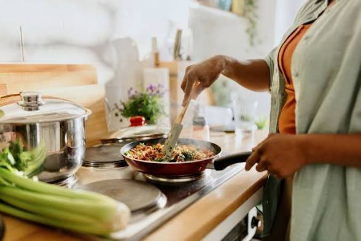

Cooking has always been more than just a hobby for me. It’s a true passion that fills my heart with creativity and joy. From experimenting with new recipes to perfecting classic dishes, I love the process of transforming simple ingredients into something delicious and memorable. Cooking allows me to express myself, challenge my skills, and share happiness with the people around me through every bite. Each meal I make is not just food; it’s a story, and i genuinely love it
Singing is one of my greatest passions. It allows me to express my emotions, tell stories, and connect with others in a way words alone cannot. I love exploring different songs and styles, challenging my voice, and improving with every practice. Performing or just singing for myself brings me joy, confidence, and a sense of freedom. Singing is not just a hobby; it is a part of who I am and a way for me to share my heart with the world.
.jpeg)
Dancing is a passion that fills me with energy and joy. It allows me to express myself, tell stories through movement, and connect with the rhythm of the music. I love learning new steps, practicing routines, and feeling the flow as my body moves. Dancing challenges me to be creative, confident, and disciplined, while also giving me moments of pure happiness. It is more than just a hobby; it is a way for me to celebrate life and share my passion with others.